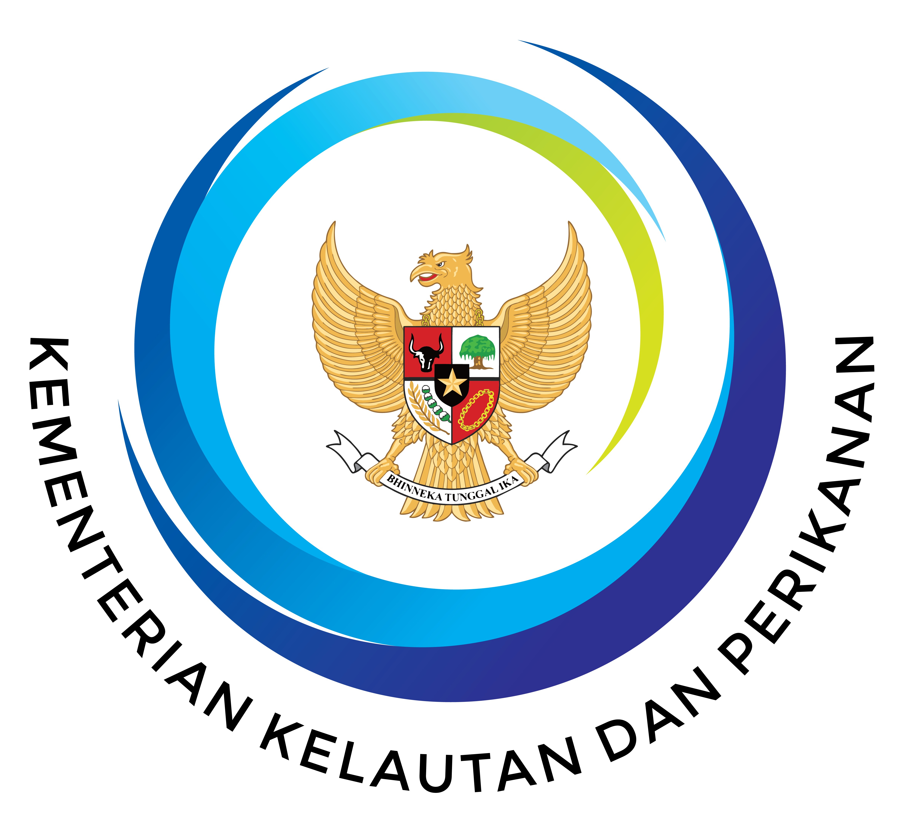
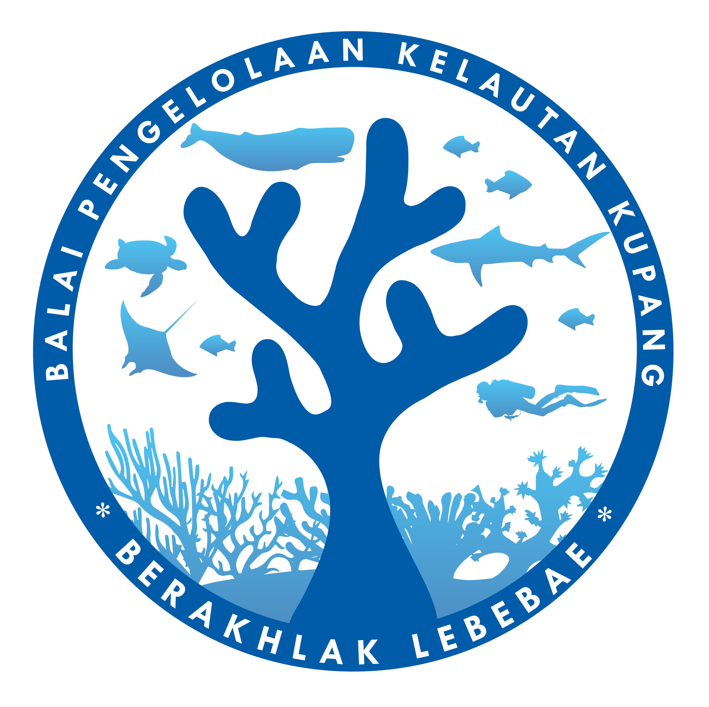

BALAI PENGELOLAAN KELAUTAN KUPANG
Dashboard Data Kependudukan dan Sosial Ekonomi Desa Pesisir
Direktorat Jenderal Pengelolaan Kelautan - Kementerian Kelautan dan Perikanan
Pencarian Desa
Provinsi
Semua Provinsi
Kabupaten
Semua Kabupaten
Kecamatan
Semua Kecamatan
Kawasan Konservasi
Semua Kawasan
Desa
Semua Desa
Peta Desa Pesisir
11 desa sesuai filter
Reset
PROFIL DAN DRILL-DOWN
Informasi Umum
Cakupan Wilayah: Seluruh Desa